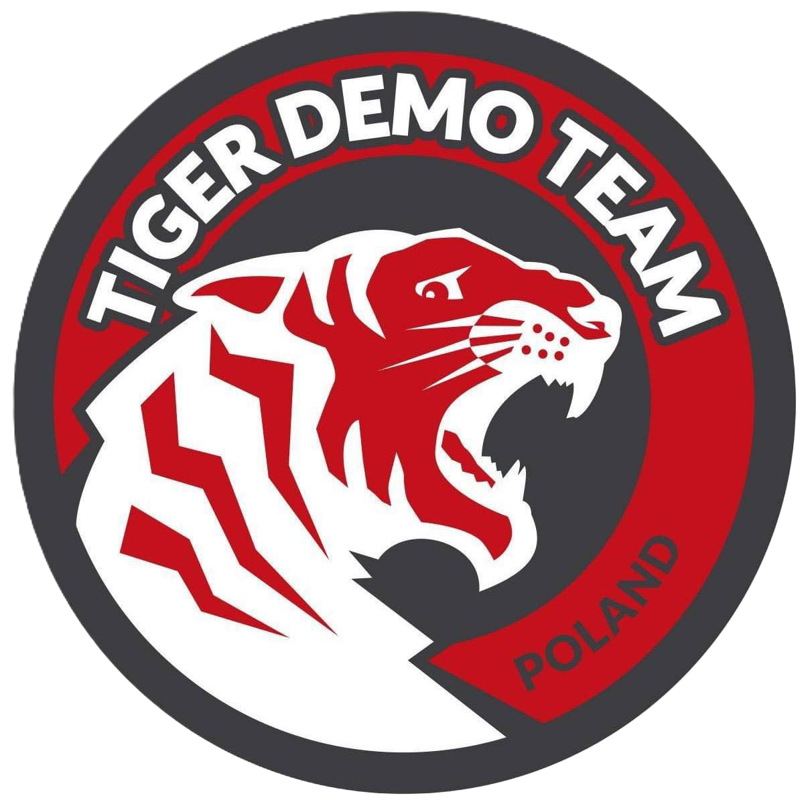

FlightGear Polska
Tiger Demo
HistoriaNaszej eskadry
Nasze motto:
Godni tradycji. Gotowi do działania.
FGPL Tiger Demo powstał z połączenia pasji do lotnictwa, wspólnego doświadczenia oraz potrzeby stworzenia czegoś wyjątkowego w świecie symulacji.
Choć oficjalna data założenia zespołu to 29 marca 2026 roku, nasza współpraca rozpoczęła się znacznie wcześniej — od wspólnych lotów, treningów i udziału w wydarzeniach
organizowanych w ramach FlightGear Polska.
Z czasem naturalnym krokiem było przekształcenie tej współpracy w pełnoprawny zespół pokazowy. Tak narodził się FGPL Tiger Demo — eskadra, która nie tylko
czerpie inspirację z historii, ale przede wszystkim buduje własną tożsamość i wyznacza nowe standardy pokazów lotniczych w FlightGear.
Od samego początku naszym celem było osiągnięcie najwyższego poziomu precyzji, synchronizacji i realizmu. Każdy manewr, każdy trening i każdy detal mają znaczenie —
bo reprezentujemy coś więcej niż tylko zespół. Reprezentujemy polskie lotnictwo w wirtualnym niebie.
Dziś stoimy u progu naszej drogi jako oficjalna eskadra, przygotowując się do pierwszego, powitalnego pokazu lotniczego.
To moment, który wyznacza początek nowego rozdziału — historii, którą dopiero zaczynamy pisać.